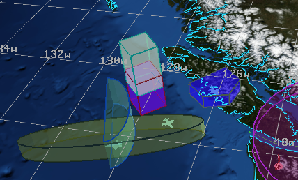
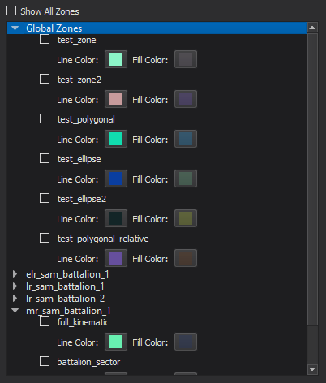

Zone Browser - Warlock¶
The Zone Browser provides an interface for visualizing zones and zone sets on the Map Display.
The dialog provides a drop-down section for each platform in the scenario that defines at least one zone or zone set. When applicable, there will also be a section for globally defined zones and zone sets placed at the top of the dialog. The “Show All Zones” checkbox enables or disables all existing zones and zone sets.
In addition to displaying and hiding zones/sets, the browser provides options for modifying line color, fill color and fill opacity (via an alpha value in the color selector). These colors can be set in the scenario via the zone color commands and the corresponding zone_set commands. By default, all of the zones/sets will be assigned a single color combination that can be modified from the Warlock preferences menu (shown below). There is also an option to randomly assign a color combination to each zone/set.
Warning
Restarting the scenario will undo all changes made to the zone colors via the browser.

Hovering the mouse cursor over a visible zone of the map display will produce a small tooltip indicating the name of the zone.
Note
The browser is only populated with zones that are defined prior to the scenario’s execution. Zones that are added programmatically via script or some other method will not be displayed.
Note
The reference_zone and negative zone commands are not supported.